Chacreamento · Poções – BA
Terrenos a partir de 2.000 m² para a sua chácara rural, a menos de dez minutos do centro de Poções.
Entrada facilitada e até 140 meses para pagar.
- —
- de área total
- —
- glebas
- 2.000 m²
- lotes a partir de
Planta humanizada em 3D · disponibilidade atualizada
Escolha a sua unidade
Arraste para passear pelo Haras, gire com dois dedos (ou o botão direito do mouse) e aproxime para ver cada lote: verde disponível, vermelho vendido, azul reservado. Toque em um lote para ver área e medidas, ou busque pelo número.
- Disponível
- Reservado
- Reserva técnica
- Vendido
Carregando o mapa…
Preparando as unidades e glebas.
Mapa-guia
Planta humanizada do Haras
O chacreamento inteiro visto de cima: portaria, Avenida Pau Ferro, Avenida Umbuzeiro, Ruas 1 a 12, as 57 glebas, a área de lazer em detalhe, o lago e a área de preservação ambiental.
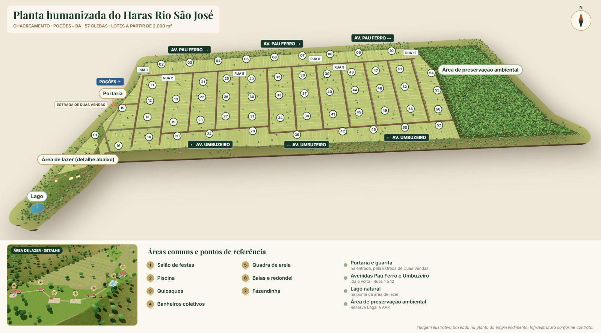
Vídeo 360°
Veja do alto
Sobrevoo em 360° do chacreamento, para você se localizar antes de escolher a sua unidade.
Imagens ilustrativas. A infraestrutura e as áreas comuns entregues são as descritas no contrato.
Fotos
Conheça o Haras hoje
Imagens aéreas do chacreamento e da infraestrutura já executada.
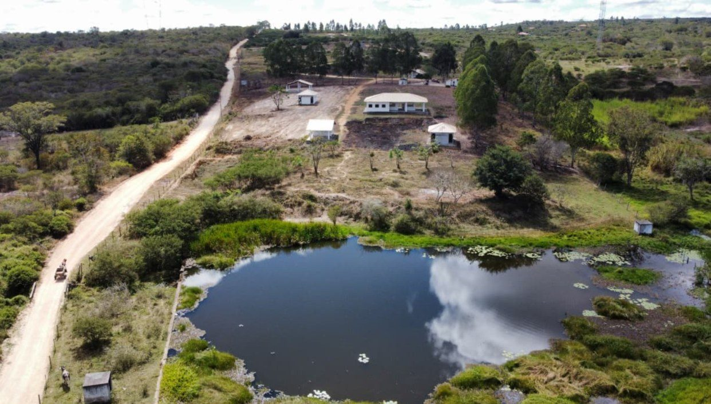
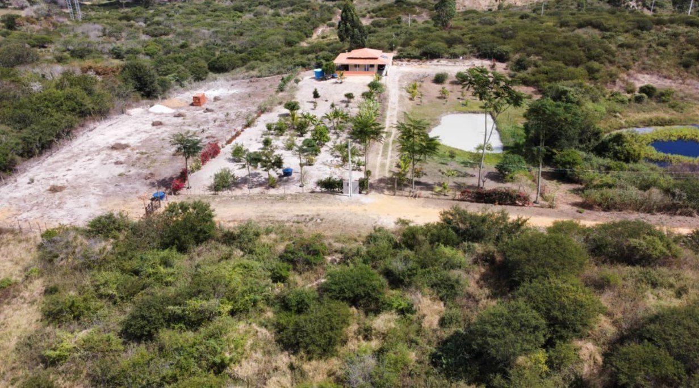
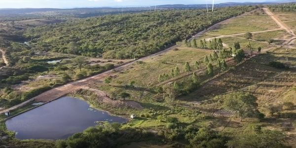
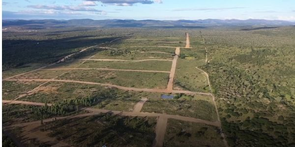
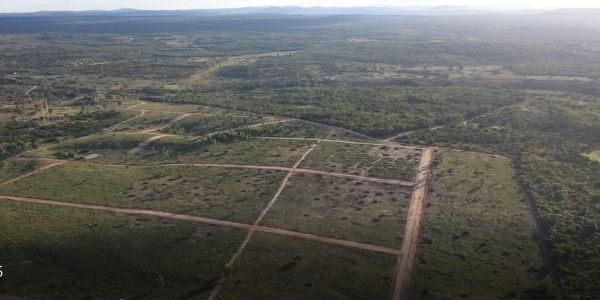
Como vai ficar
Imagens em 3D das áreas comuns e da infraestrutura previstas no contrato. Imagens ilustrativas: o que será entregue é exatamente o descrito no contrato.
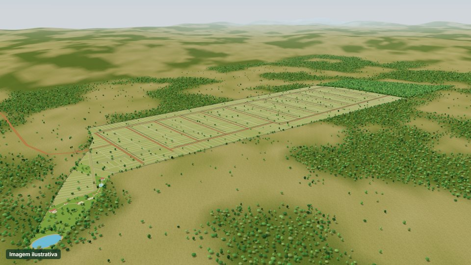
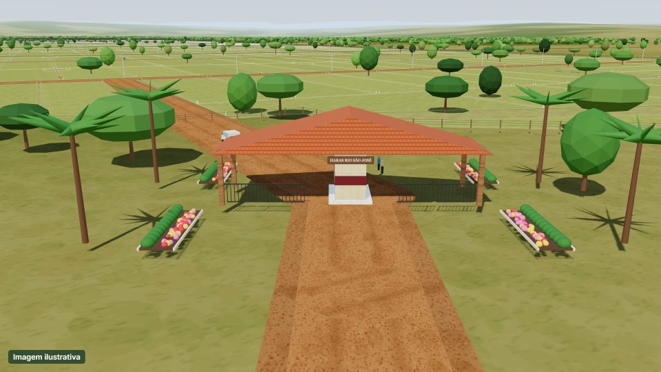
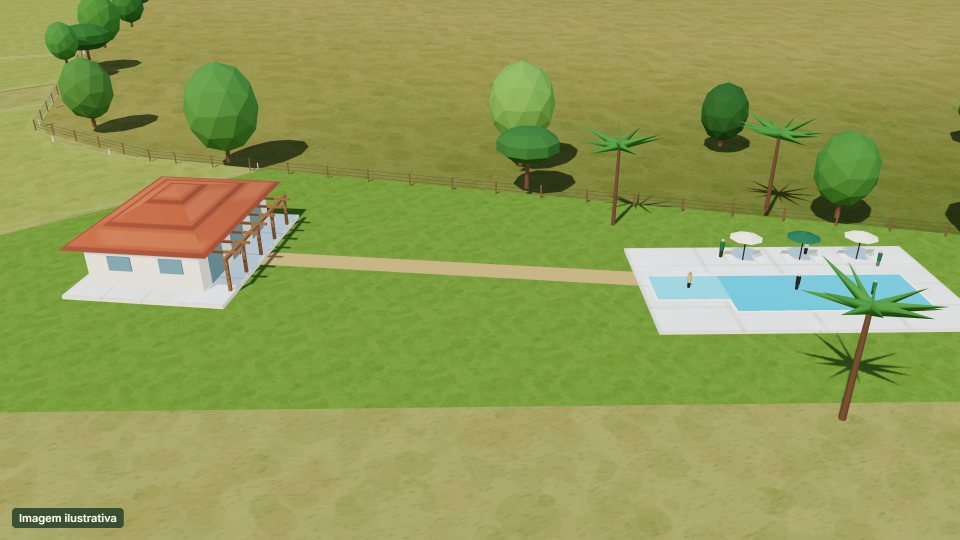
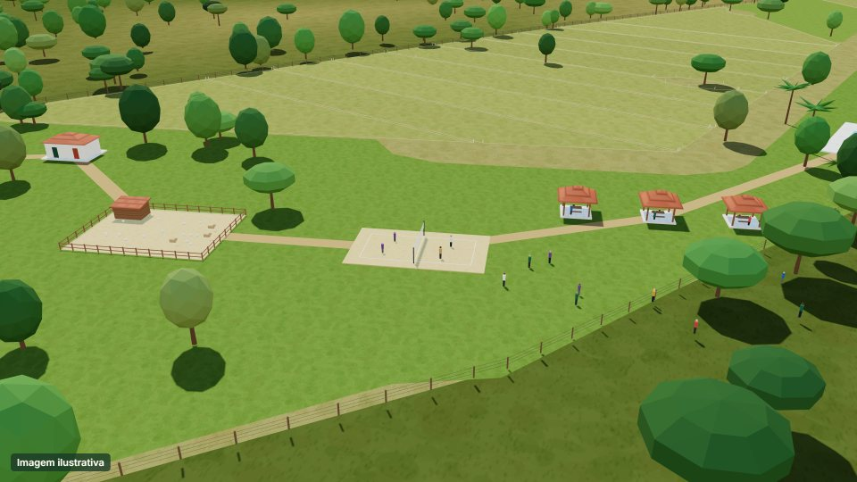
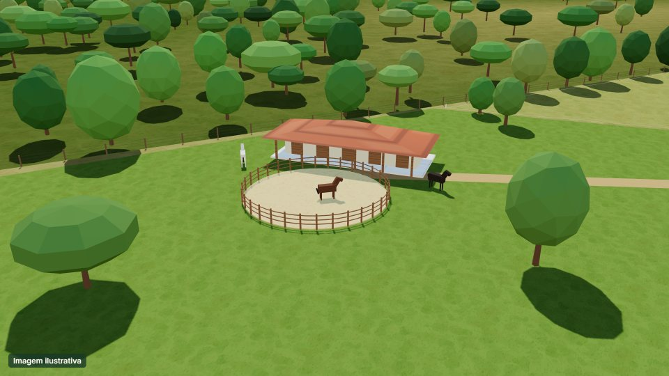
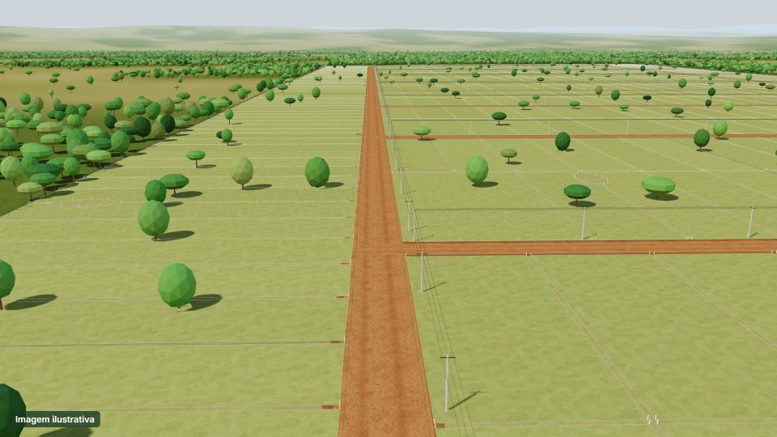
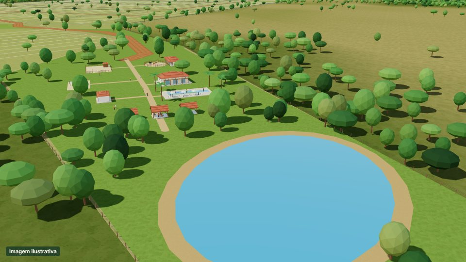
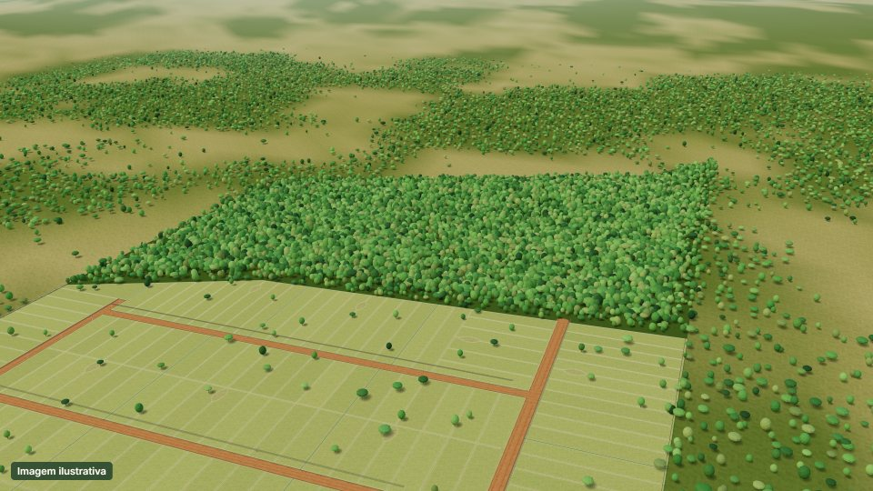
Localização
Como chegar
Estrada de Duas Vendas, km 4,5 · Zona Rural · Poções – BA
A menos de dez minutos do centro de Poções.